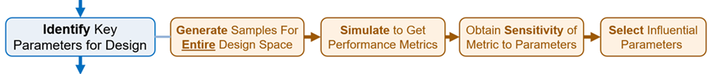
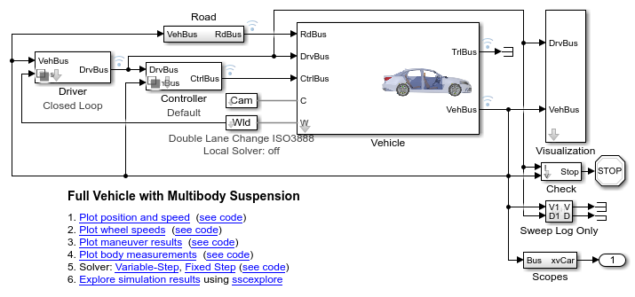
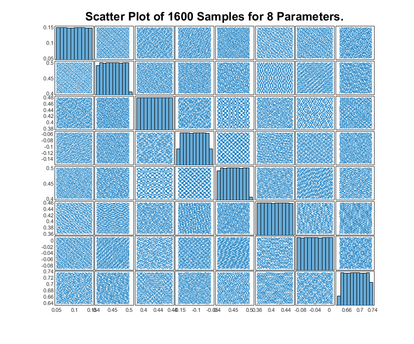
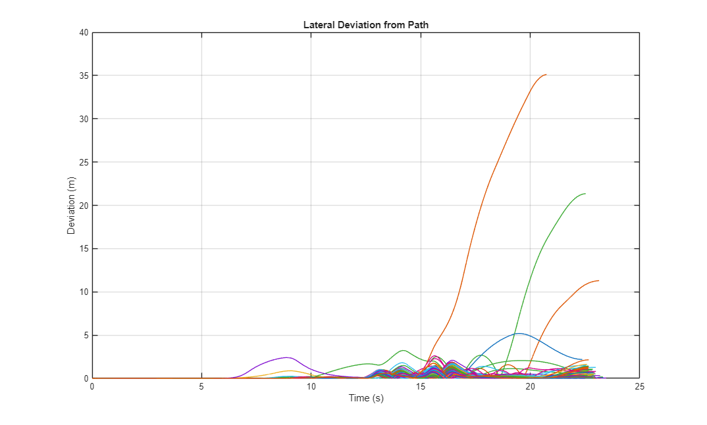
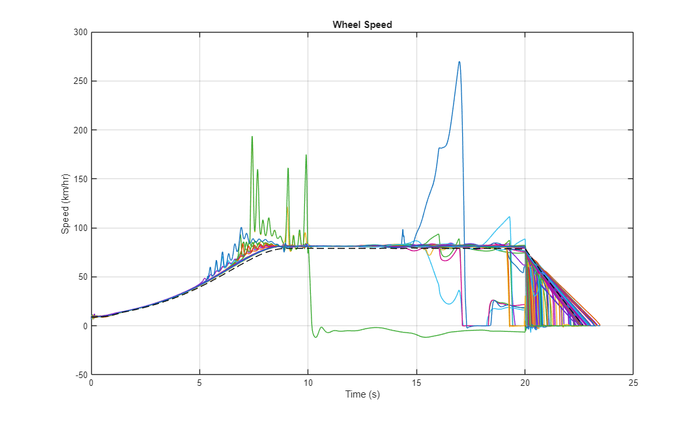
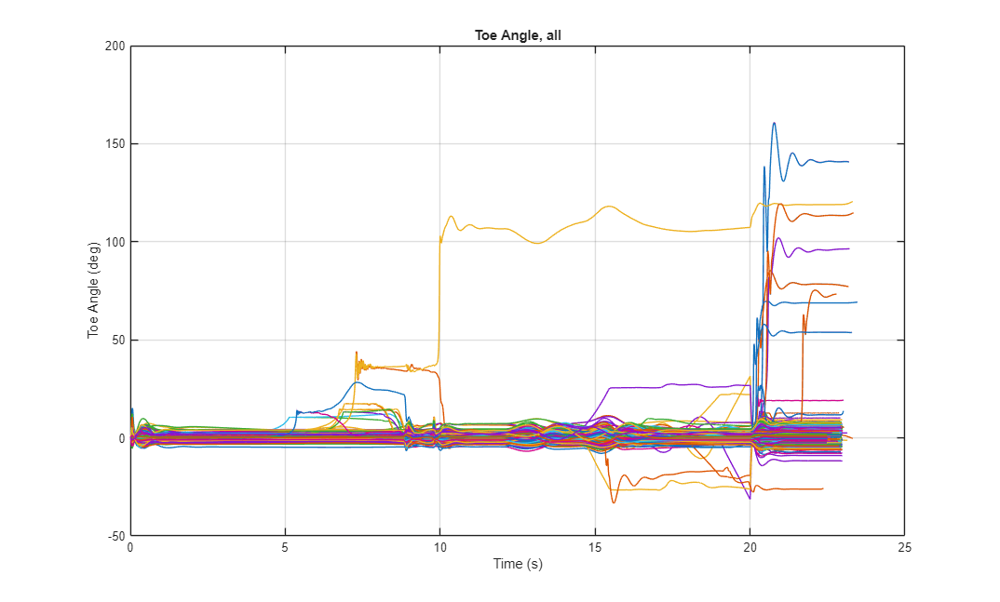
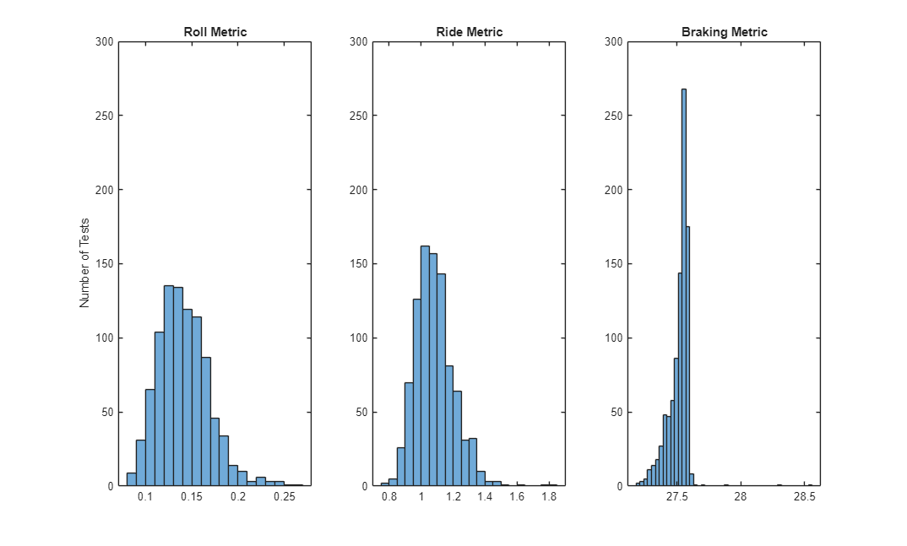
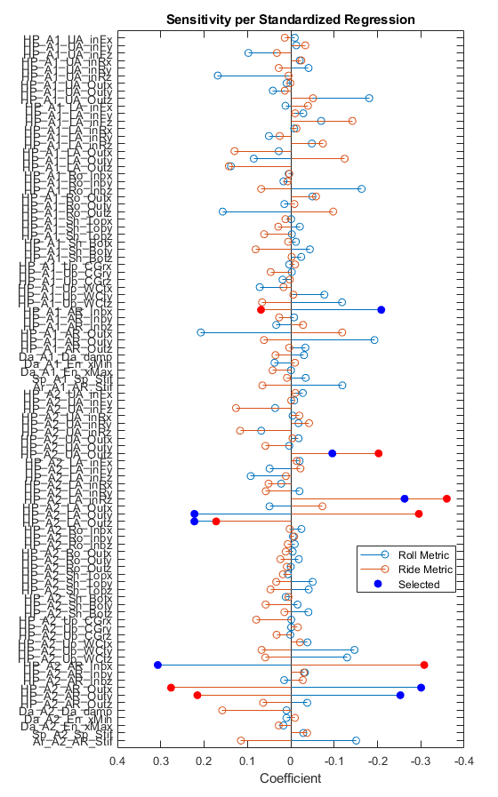
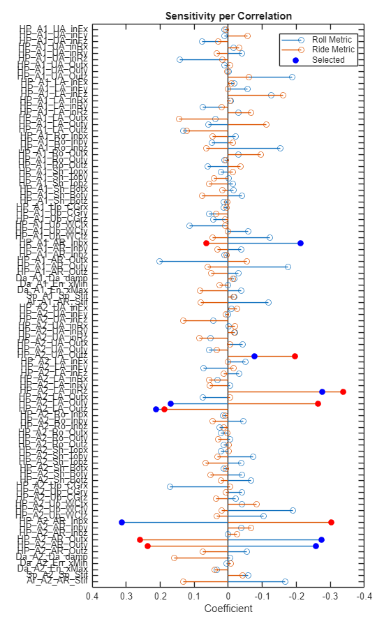

Test Sensitivity of Performance Metrics to Design Parameters
Contents
Overview
This example performs a sensitivity analysis for the design parameters in a vehicle suspension. Design of Experiments is used to generate a distribution of parameters. The simulation model is tested with those parameters and performance metrics are calculated. Statistical methods are used to identify the relative sensitivities of each performance metric to each parameter.

The code used to create this documentation is here: suspOpt_Sensitivity_Analysis.m
(return to Optimizing Vehicle Design Using AI and Simscape Overview)
Open Vehicle Model
The vehicle model is created using Simscape. The suspension is modeled using Simscape Multibody for rigid parts and joints. Simscape is used to model the springs, dampers, and driveline. A driver model attempts to follow a path provided for the test.
Perform Single Test
The vehicle model is set up to perform a test in three stages.
- Ride over a bump and measure ride comfort
- Complete a double-lane change maneuver (ISO 3888) and measure stability
- Brake to a stop and measure braking distance
For each stage, a performance metric is calculated. In the plots below you can see the changes in body pitch and roll angle as it passes over the bump and through the double-lane change. The wheel speeds show the steering and braking during the maneuver.


Load Table of Design Parameters
Adjusting the design requires selecting a set of design parameters to tune and setting ranges for those values. That set is defined in a table. For each parameter we specify:
- Label: A short character string to identify the parameter
- Parameter: Location in a MATLAB structure where the parameter is defined
- Index: Index of the value within the structure field
- Use: Indicator if the parameter should be tuned (true/false). Set to "true" until a senstivity analysis has been performed.
- Min: Minimum value for parameter range
- Max: Maximum value for parameter range
- Default: Default value for parameter
parTableVal =
94×7 table
Label Parameter Index Use Min Max Default
_________________ ________________________________________________________________ _____ _____ _________ _________ _________
{'HP_A1_UA_inFx'} {'Vehicle.Chassis.SuspA1.Linkage.UpperWishbone.sInboardF.Value'} 1 true 0.05 0.15 0.1
{'HP_A1_UA_inFy'} {'Vehicle.Chassis.SuspA1.Linkage.UpperWishbone.sInboardF.Value'} 2 true 0.401 0.501 0.451
{'HP_A1_UA_inFz'} {'Vehicle.Chassis.SuspA1.Linkage.UpperWishbone.sInboardF.Value'} 3 true 0.38 0.48 0.43
{'HP_A1_UA_inRx'} {'Vehicle.Chassis.SuspA1.Linkage.UpperWishbone.sInboardR.Value'} 1 true -0.155 -0.055 -0.105
{'HP_A1_UA_inRy'} {'Vehicle.Chassis.SuspA1.Linkage.UpperWishbone.sInboardR.Value'} 2 true 0.401 0.501 0.451
{'HP_A1_UA_inRz'} {'Vehicle.Chassis.SuspA1.Linkage.UpperWishbone.sInboardR.Value'} 3 true 0.36 0.46 0.41
{'HP_A1_UA_Outx'} {'Vehicle.Chassis.SuspA1.Linkage.UpperWishbone.sOutboard.Value'} 1 true -0.09 0.01 -0.04
{'HP_A1_UA_Outy'} {'Vehicle.Chassis.SuspA1.Linkage.UpperWishbone.sOutboard.Value'} 2 true 0.6372 0.7372 0.6872
{'HP_A1_UA_Outz'} {'Vehicle.Chassis.SuspA1.Linkage.UpperWishbone.sOutboard.Value'} 3 true 0.4 0.5 0.45
{'HP_A1_LA_inFx'} {'Vehicle.Chassis.SuspA1.Linkage.LowerWishbone.sInboardF.Value'} 1 true 0.175 0.275 0.225
{'HP_A1_LA_inFy'} {'Vehicle.Chassis.SuspA1.Linkage.LowerWishbone.sInboardF.Value'} 2 true 0.256 0.356 0.306
{'HP_A1_LA_inFz'} {'Vehicle.Chassis.SuspA1.Linkage.LowerWishbone.sInboardF.Value'} 3 true 0.1 0.2 0.15
{'HP_A1_LA_inRx'} {'Vehicle.Chassis.SuspA1.Linkage.LowerWishbone.sInboardR.Value'} 1 true -0.175 -0.075 -0.125
{'HP_A1_LA_inRy'} {'Vehicle.Chassis.SuspA1.Linkage.LowerWishbone.sInboardR.Value'} 2 true 0.256 0.356 0.306
{'HP_A1_LA_inRz'} {'Vehicle.Chassis.SuspA1.Linkage.LowerWishbone.sInboardR.Value'} 3 true 0.12 0.2 0.15
{'HP_A1_LA_Outx'} {'Vehicle.Chassis.SuspA1.Linkage.LowerWishbone.sOutboard.Value'} 1 true -0.035 0.065 0.015
{'HP_A1_LA_Outy'} {'Vehicle.Chassis.SuspA1.Linkage.LowerWishbone.sOutboard.Value'} 2 true 0.716 0.816 0.766
{'HP_A1_LA_Outz'} {'Vehicle.Chassis.SuspA1.Linkage.LowerWishbone.sOutboard.Value'} 3 true 0.1 0.2 0.15
{'HP_A1_Ro_Inbx'} {'Vehicle.Chassis.SuspA1.Linkage.TrackRod.sInboard.Value' } 1 true 0.08708 0.18708 0.13708
{'HP_A1_Ro_Inby'} {'Vehicle.Chassis.SuspA1.Linkage.TrackRod.sInboard.Value' } 2 true 0.389 0.489 0.439
{'HP_A1_Ro_Inbz'} {'Vehicle.Chassis.SuspA1.Linkage.TrackRod.sInboard.Value' } 3 true 0.175 0.235 0.205
{'HP_A1_Ro_Outx'} {'Vehicle.Chassis.SuspA1.Linkage.TrackRod.sOutboard.Value' } 1 true 0.09208 0.19208 0.14208
{'HP_A1_Ro_Outy'} {'Vehicle.Chassis.SuspA1.Linkage.TrackRod.sOutboard.Value' } 2 true 0.739 0.839 0.789
{'HP_A1_Ro_Outz'} {'Vehicle.Chassis.SuspA1.Linkage.TrackRod.sOutboard.Value' } 3 true 0.155 0.235 0.185
{'HP_A1_Sh_Topx'} {'Vehicle.Chassis.SuspA1.Linkage.Shock.sTop.Value' } 1 true -0.000217 0.099783 0.049783
{'HP_A1_Sh_Topy'} {'Vehicle.Chassis.SuspA1.Linkage.Shock.sTop.Value' } 2 true 0.44199 0.54199 0.49199
{'HP_A1_Sh_Topz'} {'Vehicle.Chassis.SuspA1.Linkage.Shock.sTop.Value' } 3 true 0.47586 0.57586 0.52586
{'HP_A1_Sh_Botx'} {'Vehicle.Chassis.SuspA1.Linkage.Shock.sBottom.Value' } 1 true 0.019783 0.079783 0.049783
{'HP_A1_Sh_Boty'} {'Vehicle.Chassis.SuspA1.Linkage.Shock.sBottom.Value' } 2 true 0.686 0.746 0.716
{'HP_A1_Sh_Botz'} {'Vehicle.Chassis.SuspA1.Linkage.Shock.sBottom.Value' } 3 true 0.12 0.18 0.15
{'HP_A1_Up_CGrx'} {'Vehicle.Chassis.SuspA1.Linkage.Upright.sCG.Value' } 1 true -0.02 0.02 0
{'HP_A1_Up_CGry'} {'Vehicle.Chassis.SuspA1.Linkage.Upright.sCG.Value' } 2 true 0.71 0.75 0.73
{'HP_A1_Up_CGrz'} {'Vehicle.Chassis.SuspA1.Linkage.Upright.sCG.Value' } 3 true 0.31 0.35 0.33
{'HP_A1_Up_WCtx'} {'Vehicle.Chassis.SuspA1.Linkage.Upright.sWheelCentre.Value' } 1 true -0.05 0.05 0
{'HP_A1_Up_WCty'} {'Vehicle.Chassis.SuspA1.Linkage.Upright.sWheelCentre.Value' } 2 true 0.7375 0.8375 0.7875
{'HP_A1_Up_WCtz'} {'Vehicle.Chassis.SuspA1.Linkage.Upright.sWheelCentre.Value' } 3 true 0.28 0.38 0.33
{'HP_A1_AR_Inbx'} {'Vehicle.Chassis.SuspA1.AntiRollBar.sInboard.Value' } 1 true -0.35 -0.25 -0.3
{'HP_A1_AR_Inby'} {'Vehicle.Chassis.SuspA1.AntiRollBar.sInboard.Value' } 2 true 0.53 0.63 0.58
{'HP_A1_AR_Inbz'} {'Vehicle.Chassis.SuspA1.AntiRollBar.sInboard.Value' } 3 true 0.1 0.2 0.15
{'HP_A1_AR_Outx'} {'Vehicle.Chassis.SuspA1.AntiRollBar.sOutboard.Value' } 1 true -0.1 0 -0.05
{'HP_A1_AR_Outy'} {'Vehicle.Chassis.SuspA1.AntiRollBar.sOutboard.Value' } 2 true 0.55 0.65 0.6
{'HP_A1_AR_Outz'} {'Vehicle.Chassis.SuspA1.AntiRollBar.sOutboard.Value' } 3 true 0.2 0.3 0.25
{'Da_A1_Da_damp'} {'Vehicle.Chassis.Damper.Axle1.Damping.d.Value' } 1 true 4000 7600 5500
{'Da_A1_En_xMin'} {'Vehicle.Chassis.Damper.Axle1.Endstop.xMin.Value' } 1 true -0.0875 -0.085 -0.086
{'Da_A1_En_xMax'} {'Vehicle.Chassis.Damper.Axle1.Endstop.xMax.Value' } 1 true 0.0625 0.065 0.064
{'Sp_A1_Sp_Stif'} {'Vehicle.Chassis.Spring.Axle1.K.Value' } 1 true 46000 58000 52000
{'Ar_A1_AR_Stif'} {'Vehicle.Chassis.SuspA1.AntiRollBar.k.Value' } 1 true 22 38 30
{'HP_A2_UA_inFx'} {'Vehicle.Chassis.SuspA2.Linkage.UpperWishbone.sInboardF.Value'} 1 true 0.05 0.15 0.1
{'HP_A2_UA_inFy'} {'Vehicle.Chassis.SuspA2.Linkage.UpperWishbone.sInboardF.Value'} 2 true 0.401 0.501 0.451
{'HP_A2_UA_inFz'} {'Vehicle.Chassis.SuspA2.Linkage.UpperWishbone.sInboardF.Value'} 3 true 0.37 0.47 0.42
{'HP_A2_UA_inRx'} {'Vehicle.Chassis.SuspA2.Linkage.UpperWishbone.sInboardR.Value'} 1 true -0.155 -0.055 -0.105
{'HP_A2_UA_inRy'} {'Vehicle.Chassis.SuspA2.Linkage.UpperWishbone.sInboardR.Value'} 2 true 0.401 0.501 0.451
{'HP_A2_UA_inRz'} {'Vehicle.Chassis.SuspA2.Linkage.UpperWishbone.sInboardR.Value'} 3 true 0.37 0.47 0.42
{'HP_A2_UA_Outx'} {'Vehicle.Chassis.SuspA2.Linkage.UpperWishbone.sOutboard.Value'} 1 true -0.05 0.05 0
{'HP_A2_UA_Outy'} {'Vehicle.Chassis.SuspA2.Linkage.UpperWishbone.sOutboard.Value'} 2 true 0.656 0.756 0.706
{'HP_A2_UA_Outz'} {'Vehicle.Chassis.SuspA2.Linkage.UpperWishbone.sOutboard.Value'} 3 true 0.4 0.5 0.45
{'HP_A2_LA_inFx'} {'Vehicle.Chassis.SuspA2.Linkage.LowerWishbone.sInboardF.Value'} 1 true 0.175 0.275 0.225
{'HP_A2_LA_inFy'} {'Vehicle.Chassis.SuspA2.Linkage.LowerWishbone.sInboardF.Value'} 2 true 0.256 0.356 0.306
{'HP_A2_LA_inFz'} {'Vehicle.Chassis.SuspA2.Linkage.LowerWishbone.sInboardF.Value'} 3 true 0.138 0.238 0.188
{'HP_A2_LA_inRx'} {'Vehicle.Chassis.SuspA2.Linkage.LowerWishbone.sInboardR.Value'} 1 true -0.175 -0.075 -0.125
{'HP_A2_LA_inRy'} {'Vehicle.Chassis.SuspA2.Linkage.LowerWishbone.sInboardR.Value'} 2 true 0.256 0.356 0.306
{'HP_A2_LA_inRz'} {'Vehicle.Chassis.SuspA2.Linkage.LowerWishbone.sInboardR.Value'} 3 true 0.1 0.2 0.15
{'HP_A2_LA_Outx'} {'Vehicle.Chassis.SuspA2.Linkage.LowerWishbone.sOutboard.Value'} 1 true -0.05 0.05 0
{'HP_A2_LA_Outy'} {'Vehicle.Chassis.SuspA2.Linkage.LowerWishbone.sOutboard.Value'} 2 true 0.656 0.756 0.706
{'HP_A2_LA_Outz'} {'Vehicle.Chassis.SuspA2.Linkage.LowerWishbone.sOutboard.Value'} 3 true 0.1 0.2 0.15
{'HP_A2_Ro_Inbx'} {'Vehicle.Chassis.SuspA2.Linkage.TrackRod.sInboard.Value' } 1 true -0.18 -0.08 -0.13
{'HP_A2_Ro_Inby'} {'Vehicle.Chassis.SuspA2.Linkage.TrackRod.sInboard.Value' } 2 true 0.359 0.459 0.409
{'HP_A2_Ro_Inbz'} {'Vehicle.Chassis.SuspA2.Linkage.TrackRod.sInboard.Value' } 3 true 0.155 0.215 0.185
{'HP_A2_Ro_Outx'} {'Vehicle.Chassis.SuspA2.Linkage.TrackRod.sOutboard.Value' } 1 true -0.15 -0.11 -0.13
{'HP_A2_Ro_Outy'} {'Vehicle.Chassis.SuspA2.Linkage.TrackRod.sOutboard.Value' } 2 true 0.739 0.779 0.759
{'HP_A2_Ro_Outz'} {'Vehicle.Chassis.SuspA2.Linkage.TrackRod.sOutboard.Value' } 3 true 0.155 0.205 0.185
{'HP_A2_Sh_Topx'} {'Vehicle.Chassis.SuspA2.Linkage.Shock.sTop.Value' } 1 true -0.10387 -0.00387 -0.05387
{'HP_A2_Sh_Topy'} {'Vehicle.Chassis.SuspA2.Linkage.Shock.sTop.Value' } 2 true 0.44195 0.54195 0.49195
{'HP_A2_Sh_Topz'} {'Vehicle.Chassis.SuspA2.Linkage.Shock.sTop.Value' } 3 true 0.47286 0.57286 0.52286
{'HP_A2_Sh_Botx'} {'Vehicle.Chassis.SuspA2.Linkage.Shock.sBottom.Value' } 1 true -0.083587 -0.023587 -0.053587
{'HP_A2_Sh_Boty'} {'Vehicle.Chassis.SuspA2.Linkage.Shock.sBottom.Value' } 2 true 0.686 0.746 0.716
{'HP_A2_Sh_Botz'} {'Vehicle.Chassis.SuspA2.Linkage.Shock.sBottom.Value' } 3 true 0.12 0.18 0.15
{'HP_A2_Up_CGrx'} {'Vehicle.Chassis.SuspA2.Linkage.Upright.sCG.Value' } 1 true -0.02 0.02 0
{'HP_A2_Up_CGry'} {'Vehicle.Chassis.SuspA2.Linkage.Upright.sCG.Value' } 2 true 0.72 0.76 0.74
{'HP_A2_Up_CGrz'} {'Vehicle.Chassis.SuspA2.Linkage.Upright.sCG.Value' } 3 true 0.31 0.35 0.33
{'HP_A2_Up_WCtx'} {'Vehicle.Chassis.SuspA2.Linkage.Upright.sWheelCentre.Value' } 1 true -0.05 0.05 0
{'HP_A2_Up_WCty'} {'Vehicle.Chassis.SuspA2.Linkage.Upright.sWheelCentre.Value' } 2 true 0.7375 0.8375 0.7875
{'HP_A2_Up_WCtz'} {'Vehicle.Chassis.SuspA2.Linkage.Upright.sWheelCentre.Value' } 3 true 0.28 0.38 0.33
{'HP_A2_AR_Inbx'} {'Vehicle.Chassis.SuspA2.AntiRollBar.sInboard.Value' } 1 true 0.25 0.35 0.3
{'HP_A2_AR_Inby'} {'Vehicle.Chassis.SuspA2.AntiRollBar.sInboard.Value' } 2 true 0.53 0.63 0.58
{'HP_A2_AR_Inbz'} {'Vehicle.Chassis.SuspA2.AntiRollBar.sInboard.Value' } 3 true 0.1 0.2 0.15
{'HP_A2_AR_Outx'} {'Vehicle.Chassis.SuspA2.AntiRollBar.sOutboard.Value' } 1 true 0 0.1 0.05
{'HP_A2_AR_Outy'} {'Vehicle.Chassis.SuspA2.AntiRollBar.sOutboard.Value' } 2 true 0.55 0.65 0.6
{'HP_A2_AR_Outz'} {'Vehicle.Chassis.SuspA2.AntiRollBar.sOutboard.Value' } 3 true 0.2 0.3 0.25
{'Da_A2_Da_damp'} {'Vehicle.Chassis.Damper.Axle2.Damping.d.Value' } 1 true 4000 7600 5500
{'Da_A2_En_xMin'} {'Vehicle.Chassis.Damper.Axle2.Endstop.xMin.Value' } 1 true -0.0875 -0.085 -0.086
{'Da_A2_En_xMax'} {'Vehicle.Chassis.Damper.Axle2.Endstop.xMax.Value' } 1 true 0.0625 0.065 0.064
{'Sp_A2_Sp_Stif'} {'Vehicle.Chassis.Spring.Axle2.K.Value' } 1 true 46000 58000 52000
{'Ar_A2_AR_Stif'} {'Vehicle.Chassis.SuspA2.AntiRollBar.k.Value' } 1 true 40 60 50
Generate Distribution of Parameters
Parameter distributions can be generated using many methods. A common method is Sobol. We generate 1000 parameter sets that distribute the parameters evenly throughout the design space covered by the 94 parameters in our design. Each parameter value is varied within its individual range. The scatter plot below shows 1000 samples for 8 parameters, a small subset of the 94 parameters that cover our entire design space.
Some of the parameter sets will not be tested as they will violate the constraint we have on the track rod hardpoints. Those will be omitted before the simulation sweep is started.
Run Simulations Using Parallel Computing
Using the parsim() command, the suite of tests is executed in parallel on multiple workers. Using Fast Restart, the model is only compiled once per worker. Because we have defined the design parameters as run-time parameters, we can modify their values even within the compiled model. This dramatically shortens the time it takes to execute the sweep.
Progress is reported using the Simulation Manager. We can see if any warnings or errors have occurred during any of the tests and see how long each run has taken.
1600 parameter sets submitted, 1311 obey parameter constraints. Starting parallel pool (parpool) using the 'Processes' profile ... Connected to parallel pool with 4 workers. 1311 simulations completed in 5667.4656 seconds. Of 1311 tests, 922 were valid.  
Extract Performance Metrics
For all runs, performance metrics are calculated.
- Ride Comfort: The magnitude of the vertical acceleration, roll acceleration, and pitch acceleration of the vehicle body is integrated during the period of time the vehicle passes over a bump. Larger values indicates worse ride comfort.
- Roll Stability: The L2 norm of the roll angle is calculated during the period of time the vehicle is in the double lane change maneuver. Larger values indicate worse vehicle stability.
- Vehicle Safety: The braking distance at the end of the test is measured. Longer braking distance indicates worse safety.
The plots below show a histogram of the performance metrics. The braking metric has a very narrow band, indicating the design space does not have much effect on the braking distance. Other design parameters or tests must be considered to impact that performance metric.
Perform Sensitivity Analysis
There are many methods that can be used to perform a sensitivity analysis. Results using the Standard Regression method are shown below.
In the first plot below, the coefficients indicating the influence of the parameter on the performance metrics are plotted in a tornado plot (unsorted) using the MATLAB command stem.
- Stem magnitude indicates the parameter has a large influence on the performance metric.
- Stem direction indicates if increasing the parameter increases or decreases the metric. When the same parameter has stems pointing in opposite directions, it indicates that altering the parameter trades an improvement in one metric with a degradation of the other.
The stems with filled-in circles are the ones our criteria have selected for design space exploration. To see the criteria for selection, look at code suspOpt_Sensitivity_Analysis_select.m
The second plot shows only the parameters that have been selected. The label includes abbreviations such as "HP" for hardpoint, "A1" for front axle", "UA" for upper arm", and so on. A table of the selected parameters is shown in the next section.

Select parameters according to Correlation

Selected List of Parameters
That list is then trimmed for the remainder of our design space investigation. Working with a reduced number of parameters accelerates the process of exploring the design workflow. Below is the list selected using our criteria applied to Standardized Regression coefficients. The track rod parameters have also been explicitly added to the list so that we can see how to implement constraints on parameters in the rest of the workflow.
ans =
10×7 table
Label Parameter Index Use Min Max Default
_________________ ________________________________________________________________ _____ _____ _____ _____ _______
{'HP_A1_AR_Inbx'} {'Vehicle.Chassis.SuspA1.AntiRollBar.sInboard.Value' } 1 true -0.35 -0.25 -0.3
{'HP_A1_Ro_Inbz'} {'Vehicle.Chassis.SuspA1.Linkage.TrackRod.sInboard.Value' } 3 true 0.175 0.235 0.205
{'HP_A1_Ro_Outz'} {'Vehicle.Chassis.SuspA1.Linkage.TrackRod.sOutboard.Value' } 3 true 0.155 0.235 0.185
{'HP_A2_AR_Inbx'} {'Vehicle.Chassis.SuspA2.AntiRollBar.sInboard.Value' } 1 true 0.25 0.35 0.3
{'HP_A2_AR_Outx'} {'Vehicle.Chassis.SuspA2.AntiRollBar.sOutboard.Value' } 1 true 0 0.1 0.05
{'HP_A2_AR_Outy'} {'Vehicle.Chassis.SuspA2.AntiRollBar.sOutboard.Value' } 2 true 0.55 0.65 0.6
{'HP_A2_LA_Outy'} {'Vehicle.Chassis.SuspA2.Linkage.LowerWishbone.sOutboard.Value'} 2 true 0.656 0.756 0.706
{'HP_A2_LA_Outz'} {'Vehicle.Chassis.SuspA2.Linkage.LowerWishbone.sOutboard.Value'} 3 true 0.1 0.2 0.15
{'HP_A2_LA_inRz'} {'Vehicle.Chassis.SuspA2.Linkage.LowerWishbone.sInboardR.Value'} 3 true 0.1 0.2 0.15
{'HP_A2_UA_Outz'} {'Vehicle.Chassis.SuspA2.Linkage.UpperWishbone.sOutboard.Value'} 3 true 0.4 0.5 0.45